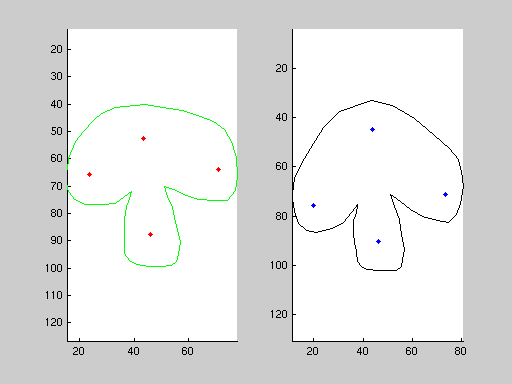
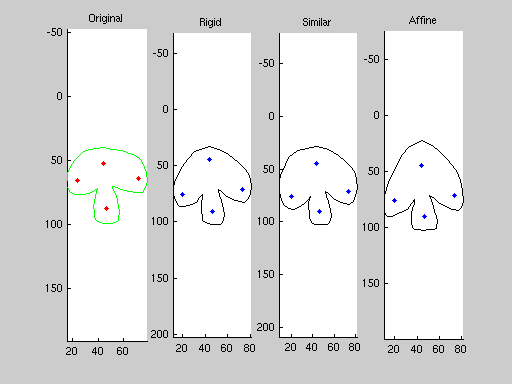
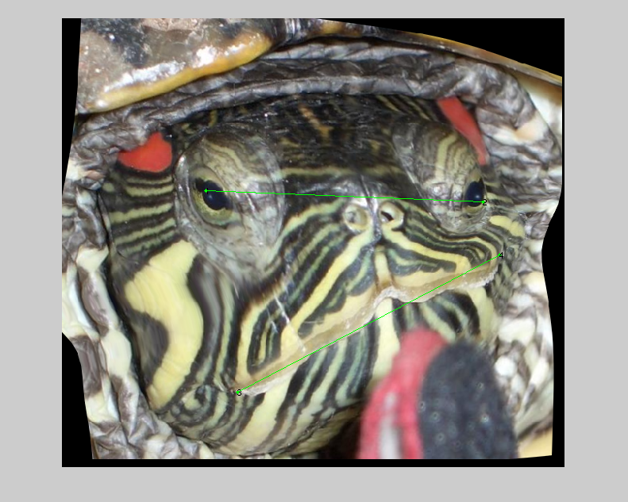

Moving Least Squares
The Moving Least Squares algorithm is a deformation technique that allows to compute a map f:R2->R2 from the transformation of a set of N pivot points p in the new positions q. The map f is smooth (f in C2), preserves the identity (for q=p the map is the identity) and ensures that the points p are transformed in the points q (f(p)=q). In the work [1] the authors describes a simple optimization technique that allows to get, for each point of the R2 plane, the best linear transformation (affinity, similarity or rigid transformation) that moves the points according to a set of weights of the transformed pi-qi. The deformations are here implemented in matlab for points and images using as pivots points and segments as explained in [1]. Each algorithm (the one with points as pivots and the one with segments as pivots) implements the three cases where the local transformation is 'affine', 'similar' or 'rigid'. Only for Matlab7.2.0 or newer there is the code that allows to deform interactively points and images (really funny :).
[1] "Image Deformation Using Moving Least Squares",
Scott Schaefer, Travis McPhail, Joe WarrenContents
MLS for points using points as pivots
Here we try to use the MLS tools to deform a set of points. As first step the points are required; then the pivots are required; finally the new positions of the pivots (in the same order) are taken. Given this set of informations the mlsd object can be generated: an mlsd object is the precomputation of a deformation on a set of points v given the pivots and the deformation type. The mlsd allows to precompute all the values that can be computed when the destination positions of the pivots is unknown. This allows to get a real-time deformation tool that can work fast on images too. Given the mlsd for a set of new pivot positions the transformed points can be computed. The default transformation used is the rigid one, the same work can be done using different transformation types.
% Collecting the points: f=figure; imshow(ones(100)); v = getpoints; close(f); % Requiring the pivots: f=figure; axis equal ij; hold on; plotshape(v,true,'g-'); p = getpoints; close(f); % Requiring the new pivots: f=figure; axis equal ij; hold on; plotshape(v,true,'g-'); plotpointsLabels(p,'r.'); q = getpoints; close(f); % Precomputation of the mlsd: mlsd = MLSD2DpointsPrecompute(p,v); % Obtaining the transformed points: fv = MLSD2DTransform(mlsd,q); % Plotting: figure; subplot(121); axis equal ij; hold on; plotshape(v,true,'g-'); plotpoints(p,'r.'); subplot(122); axis equal ij; hold on; plotshape(fv,true,'k-'); plotpoints(q,'b.'); % Other transformations: fv_rigid = fv; % Transforming the same points using a similarity: mlsd = MLSD2DpointsPrecompute(p,v,'similar'); fv_similar = MLSD2DTransform(mlsd,q); % Transforming the same points using an affinity: mlsd = MLSD2DpointsPrecompute(p,v,'affine'); fv_affine = MLSD2DTransform(mlsd,q); % Plotting: figure; subplot(141); axis equal ij; hold on; plotshape(v,true,'g-'); plotpoints(p,'r.'); title('Original'); subplot(142); axis equal ij; hold on; plotshape(fv_rigid,true,'k-'); plotpoints(q,'b.'); title('Rigid'); subplot(143); axis equal ij; hold on; plotshape(fv_similar,true,'k-'); plotpoints(q,'b.'); title('Similar'); subplot(144); axis equal ij; hold on; plotshape(fv_affine,true,'k-'); plotpoints(q,'b.'); title('Affine'); 
MLS for images using points as pivots
The same work done for points can be used for images using a dense set of points over a grid that cover the image and using the interpolation to get all the transformations. The function MLSD2DWarp do exactly this work. The same mlsd must be computed to obtain the warping, only the set of points is different because a grid is required, so a step must be chosen.
% The step size: step = 15; % Reading an image: img = imread('image.jpg'); % Requiring the pivots: f=figure; imshow(img); p = getpoints; close(f); % Requiring the new pivots: f=figure; imshow(img); hold on; plotpointsLabels(p,'r.'); q = getpoints; close(f); % Generating the grid: [X,Y] = meshgrid(1:step:size(img,2),1:step:size(img,1)); gv = [X(:)';Y(:)']; % Generating the mlsd: mlsd = MLSD2DpointsPrecompute(p,gv); % The warping can now be computed: imgo = MLSD2DWarp(img,mlsd,q,X,Y); % Plotting the result: figure; imshow(imgo); hold on; plotpoints(q,'r.');
MLS for points using segments as pivots
The function MLSD2DlinesPrecompute allows to get mlsd object that can be used to compute teh MLS deformation of points or images where the constraints (pivots) are segments. Here an exemple is shown only for the image.
% Requiring the pivots: f=figure; imshow(img); lp = getpoints; close(f); % Rearranging the pivots: if mod(size(lp,2),2)==1 lp = lp(:,1:end-1); end p = [lp(:,1:2:end);lp(:,2:2:end)]; % Requiring the new pivots: f=figure; imshow(img); hold on; plotpointsLabels(lp,'r.'); plot([p(1,:);p(3,:)],[p(2,:);p(4,:)],'r-'); lq = getpoints; close(f); % Rearranging the pivots: if mod(size(lq,2),2)==1 lq = lq(:,1:end-1); end q = [lq(:,1:2:end);lq(:,2:2:end)]; % Generating the mlsd: mlsd = MLSD2DlinesPrecompute(p,gv); % The warping can now be computed: imgo = MLSD2DWarp(img,mlsd,q,X,Y); % Plotting: f=figure; imshow(imgo); hold on; plotpointsLabels(lq,'g.'); plot([q(1,:);q(3,:)],[q(2,:);q(4,:)],'g-');
Interactive MLS deformation
Only for Matlab 7.2.0 or higher I've written a pair of functions that allows to use the impoint and imline objects to interactively deform points or images. To act over points interactively write:
MLSDeformPoints(v);
the pivots are required and the interactive deformation starts. Closing the window the actual transformed points are saved in the variable fv. To act over points with segments write:
MLSDeformPoints(v,zeros(4,0));
in this case the segments are required (a sequence of point pairs). To work on images use the calls:
MLSDeformImage(img); % Points as pivots MLSDeformImage(img,zeros(4,0)); % Segments as pivots
the output is saved in the imgo variable.
Other infos
There are other parameters that can be used with the MLDS functions, see the help to learn more and read the cited work [1].